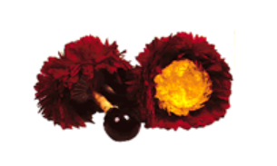
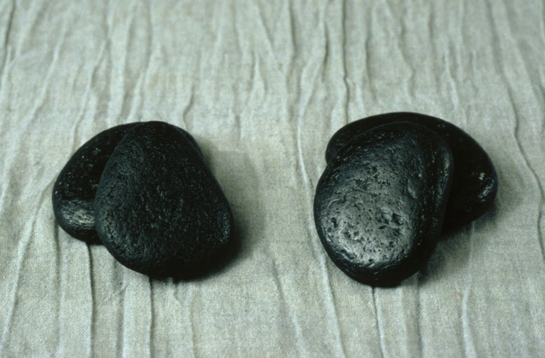
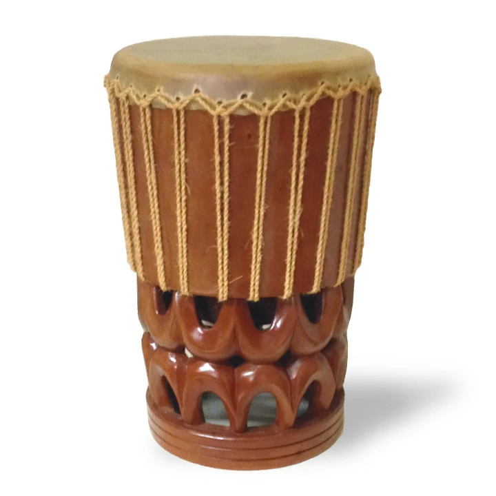
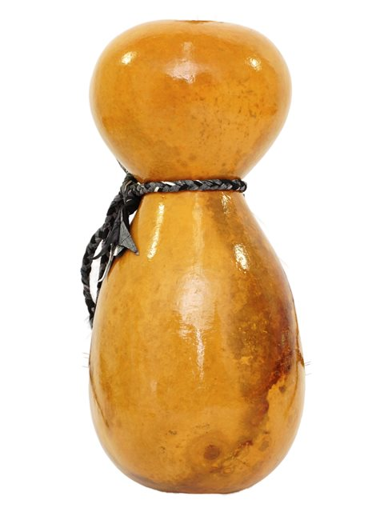

Uli Uli are gourds filled with small shells, seeds, or pebbles. The handle is for grip and to act as a point to attach a counter weight. The counter weight is often made out of kapa, feathers, or both. If feathers are used, then they are often dyed bright colors such as yellow and red. Uli uli are used more often in modern style hula dances. They are meant to be shaken quickly to add excitement to the dances. Most preformers will use two when dancing but there are those who dance with one.
'Ili'Ili are water worn pebbles made out of organic rock. Similar to castanets, dancers will hold two in each hand and strike them together making a clacking sound. 'Ili'ili are often used in hula dances that honor Pele, the goddess of volcanos and fire and creator of the islands. Dancers use these stones to honor her, since she created them.
Pahus are tall drums. The body of a pahu is usually made of cocunut tree trunk, and the head is usually made of dried shark skin. It was believed the sound of a pahu would alert the gods and goddess of sacred ceremonies and rutals, and the rutulized movements (dancing) would keep their attention. Today, these drums are used toady in a wide variety of dances and have become one of the staple instruments to hula.
Ipus are gourds hollowed out and used as percussion instruments. These are the most commonly used instruments in hula. Often they are used in dances connected to water, because Hawaiians used them to contain water.
   